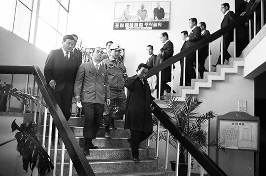
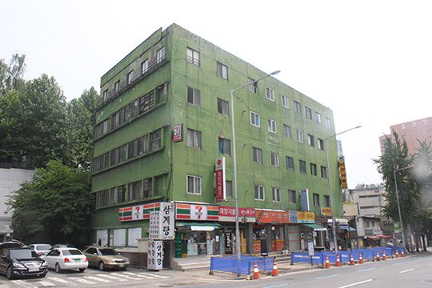
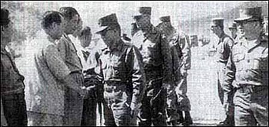
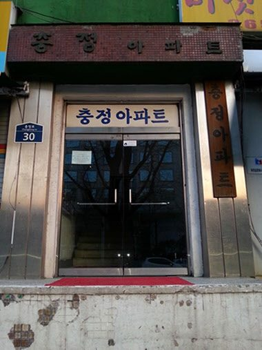

연재일 2014-08-28출처 조선일보 프리미엄조선 연재
국가재건최고회의가 엔간히 안정 기반을 다진 1961년 7월, 서울은 무더위에 갇혀 있었다. 그 여름의 어느 날, 비서실장 박태준은 가슴 아픈 사연을 들어야 했다. 함경북도 출신의 김 아무개 노인이 국군에 들어간 아들 여섯을 모두 6‧25전쟁 때 잃고 혈혈단신으로 제주도에서 이발소를 운영하고 있다는 것. 그는 박정희 의장을 보게 해달라는 김 노인과 직접 만나지 않을 수 없다고 생각했다.
박태준은 육사 동기생 중에 절친한 함북 출신(박정인 장군)이 있어서 그쪽 사투리에 익숙했는데, 김 노인과 몇 마디 나누는 사이에 영락없이 함북 사람이라는 점을 알아챌 수 있었다. 김 노인의 투박한 하소연은 반문(反問)으로 마무리 되었다. 아들 여섯 명을 나라에 바친 아버지가 이토록 어렵게 살아서야 되겠느냐? 그 동안 이승만 대통령도 나를 만나주지 않았고 장면 총리도 나를 만나주지 않았지만 전쟁을 해본 군인인 당신들은 내 심정을 알아주지 않겠느냐? 신세 한탄인 동시에 나라에 대한 원망이었다.
“무엇을 원하십니까? 어떻게 해드리면 되겠습니까?”
이렇게 꿈틀대는 박태준의 마음에 김 노인이 대못을 박듯 단호히 요구했다. 박정희 의장님과 면담을 시켜 달라. 만나 뵙고는 먹고 살 수 있는 대책을 세워 주십사, 이거 하나만 부탁하겠다.

월남(越南, 요즘은 ‘탈북’이라 한다) 노인의 개인사 때문에 그야말로 국사에 눈코 뜰 새 없는 의장의 시간을 빼내도 되겠는가. 하지만 아들 여섯을 몽땅 나라에 바친 아버지에 대한 정부의 책임도 매우 중요하지 않는가. 박태준의 갈등은 슬그머니 면담 주선 쪽으로 기울었다. 그런데 김 노인과 만난 박정희도 아주 가슴이 짠해진 모양이었다.
“그분에게 최대한 편의를 봐드려. 자네가 알아서 해.”
국가의 이름으로, 애국충절의 이름으로 김 노인을 번듯하게 살아가게 해줄 책무를 부여받은 박태준은 당장에 묘한 아이디어가 떠오르지 않았다. 그러나 김 노인은 거의 매일 그를 찾아와 성화를 부려댔다. 며칠이 지난 다음이었다. 안달이 나서 더 견디지 못한 김 노인이 손수 하나의 방도를 들고 나타났다. 굴레방다리 근처에 있는 적산가옥인 ‘풍전아파트’를 불하받게 해달라는 것. 김 노인을 돌려보낸 그는 즉시 그 물건에 대한 조사를 시켰다.

과연 풍전아파트는 김 노인의 말대로 적산가옥이었다. ‘1937년에 등기부에 등재됨. 지상 4층, 지하 1층. 그때 일본인 건축가 도요타 다네오가 세운 것으로, 그의 이름을 따서 도요타아파트로 불리다가 우리말로 번역해 풍전아파트라 부르게 됨. 6‧25전쟁 중 서울이 인민군 치하였을 때는 군관들의 숙소로 쓰임.’ 그러나 ‘불하 불가’ 상태의 적산가옥이었다. 관할은 관세청이고, 현재는 국방부 장관이 임대해서 미 8군 독신 장교들의 숙소로 쓰고 있었다.
이번에는 박태준이 먼저 김 노인을 불러서 불하 불가의 배경을 알아듣게 설명해줬다. 하지만 씨도 먹히지 않았다. 막무가내였다. 드러누워 ‘땡깡’이라도 부릴 태세였다. 어쩔 수 없이 그는 다소 무리를 해서라도 국가의 이름, 애국충절의 이름으로 김 노인의 한 맺힌 소원을 들어주기로 했다. 관세청과 국방부에 협조를 얻어내고, 미군 숙소를 새로 구하느라 야단법석을 떨었다.
그런데 또 다른 문제가 기다리고 있었다. 엘리베이터까지 설치돼 있는 풍전아파트의 계약금이 보증금, 화재보험료, 임대료 등을 합쳐 그때 돈으로 350만원이나 되었다. 제법 거금이었다. 최고회의의 예산에서 빼낼 수도 없고, 산하기관에 더 압력을 넣을 수도 없었다. 이 난제를 박태준은 아내와 주변의 몇 사람에게 푸념처럼 털어놓았다.
박태준의 푸념이 군납업체를 경영하는, 정직하고 훌륭한 사업가라는 세평을 듣는 정두화 사장의 귀에 들어갔다. 25사단 참모장 박태준이 ‘가짜 고춧가루’를 뒤엎었을 때 진짜 고춧가루를 납품하면서 서로 초대면을 했던 정두화. 아들 6명을 나라에 바친 노인을 위한 일입니다. 이 한마디에 정 사장은 벌써 마음이 7할쯤 열려 버렸다. 노인이 조금만 기다려주면 잘 갚겠다고 철석같이 약속합니다. 이 첨언에 정 사장은 완전히 마음을 열고 말았다.

정 사장과 김 노인의 첫 만남이 이뤄졌다. 박태준의 아내도 증인처럼 동석을 했는데, 김 노인은 정 사장에게 모든 것을 일임하겠다고 했다. 나 같은 사람이 어떻게 사업을 끌어가겠느냐. 젊고 똑똑한 정 사장이 나를 도와 달라. 이 건물을 앞으로 어떻게 활용해야 돈을 벌 수 있을 건지, 그런 걸 내가 어디 가서 의지하겠느냐.
김 노인의 간곡한 부탁에 함께 앉은 사람들은 자신도 모르게 저절로 그러듯이 고개를 끄덕였다. 아들 6명을 나라에 바친 늙은 아버지를 누가 이길 수 있겠는가. 결국 정 사장이 김 노인을 떠맡았다. 다음날부터 김 노인은 아예 용두동에 있는 정 사장의 사무실로 출근을 시작했다.
350만원이라는 거금을 차용증서도 받지 않고 임대계약금으로 내준 정 사장은 고심을 거듭한 끝에 호텔로 개조하자는 결론에 닿았다. 풍전아파트는 중앙난방식이고 건물의 중앙을 정원처럼 비워 둬서 호텔로 개조하기 딱 좋은데다가, 마침 이듬해는 세계산업박람회를 경복궁에서 열게 돼 있는데 서울의 고급 숙박시설이 턱없이 부족하니 사업적으로나 국가적으로나 시의적절한 선택이었다. 정 사장은 박태준 비서실장을 통해 박정희 의장에게 보고를 하고, 교통부의 협조를 받고, 풍전아파트 주변의 주택 일부를 더 매입하기로 했다.
그때부터였다. 호텔 탄생의 예고와 함께 김 노인이 세간의 화제로 떠돌기 시작했다. 김 노인이 박 의장과는 가까운 친척이다, 박태준에게는 군대 상사였다…. 이러한 소문이 꼬리에 꼬리를 물었다. 신문, 잡지가 그것을 놓칠 리 만무했다. ‘세계 전쟁사에 아들 6명을 국가에 바친 아버지는 전무하다.’ 이런 기사들이 생산되면서 급기야 김 노인이 영웅 비슷한 사람으로 변모해갔다. 그래도 ‘세계 전쟁사에 남을 주인공’은 기자들에게 자신의 배후 조력자들에 대해 철저히 함구하는 미덕을 지키고 있었다.
호텔 개조 공사가 막을 올렸다. 함경도 실향민들이 밀려들었다. 이권을 달라, 일자리를 달라. 청탁이 넘쳐났다. 김 노인과 정 사장은 실향민들에게 조금도 짜증을 부리지 않았다. 일단 완공 때까지는 조용히 기다려 달라. 이 말만 되풀이했다.
마침내 김 노인의 한 맺힌 소원이 완성을 향해 다가서는 어느 날이었다. 박정희 의장의 비서실장에게 진정서 한 장이 날아들었다. 그때 박태준은 자리를 옮겨 상공담당 최고위원을 맡고 있었다.
<호텔 사장이라는 그 노인에게는 원래 아들이 없습니다. 원래 아들이 없는데 전사한 아들들이 있을 수 있겠습니까? 함경북도에서 월남한 것은 맞습니다만, 고향에서도 행실이 좋지 않아서 손가락질을 받았던 사람인데…>
세상에! 진정서가 사실이었다. 김 노인은 구속되었다. 세계 전쟁사에 비극의 아버지로 등재될 뻔했던 ‘김병조’라는 이름이 하루아침에 대범한 사기꾼의 이름으로 나뒹굴었다. 언론들이 연일 시끌벅적했다. 희대의 사기극이라 했다. 사건의 전말(顚末) 그대로 정두화 사장은 공범으로 몰리지 않았다. 본전(계약금 350만원)만 돌려받고 호텔에서는 멀어져야 했다.
문제의 적산가옥은 ‘코리아관광호텔’이 되었다가 1975년엔가 다시 아파트로 돌아가면서 ‘충정아파트’라 불리게 되었다. 요새는 서울 최초의 아파트, 서울 최고(最古)의 아파트로 이목을 끌고 있다.

그 사기극이 세상을 떠들썩하게 했던 때로부터 무려 60년이 더 흐른 가을날이었다. 박태준은 곤혹스런 웃음을 감추지 못하고 손을 내저으며 이렇게 회고를 마쳤다.
“그때까지도 한국사회는 여전히 전후(前後)의 고달픈 날들을 지나가는 중이었는데, 내가 박 대통령을 모시는 동안에 그 영감쟁이한테 홀딱 속았던 것이 단 하나 실수였소. 전혀 냄새도 못 맡고 각하와 면담을 시켰으니 실수였지. 사기극이란 게 드러났을 때는 각하에게 송구스러웠지. 그런 걸 눈곱만큼도 마음에 두실 분은 아니었지만, 괜히 내 마음이 그랬다는 거지.
아들 여섯을 나라에 바쳤다, 여기에 각하도 그냥 마음이 녹았던 건데, 원래 아이들 가르치는 선생님의 그 약한 데가 있는 분이셨으니… 좋은 일을 해주려다가 창피만 당하기도 하는 거, 이게 세상사에는 다 들어있는 종목인 거요.”